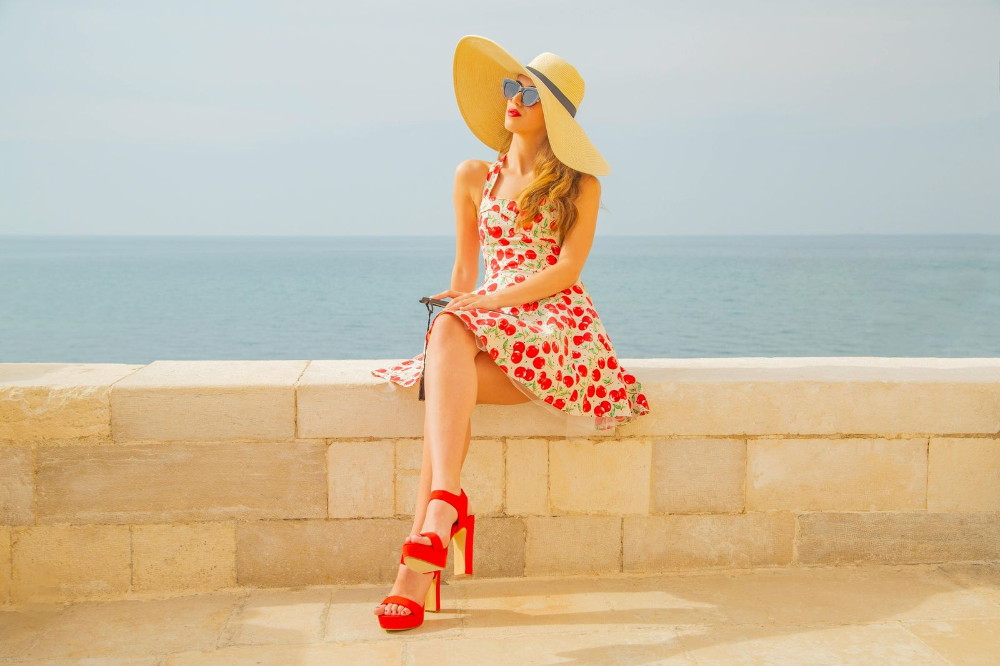
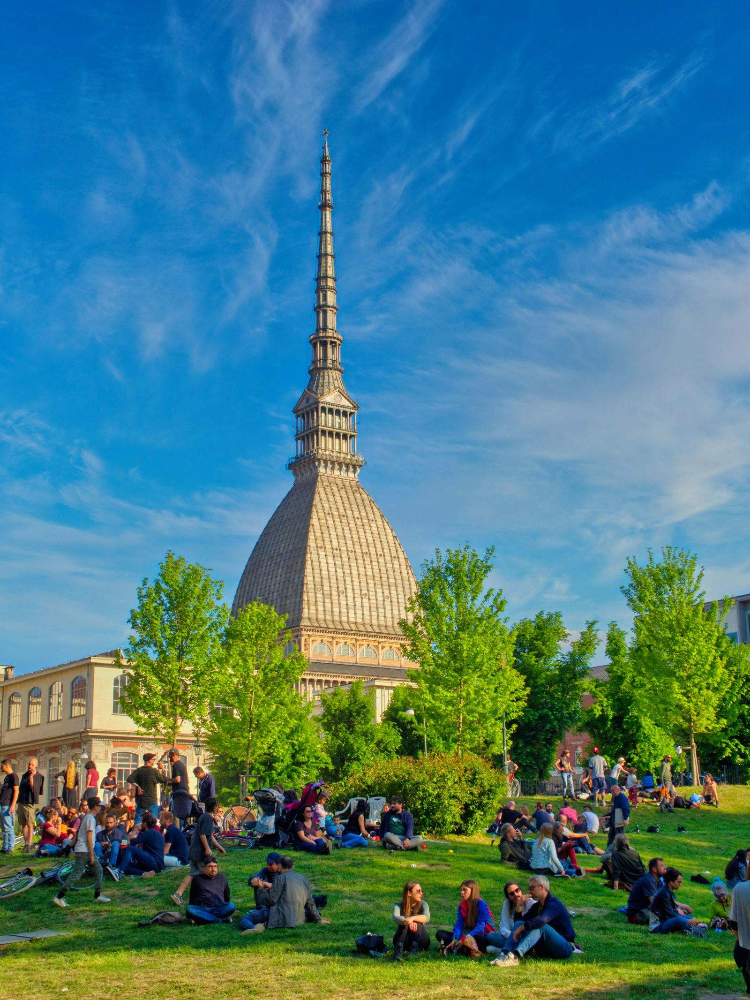

L'estate italiana è cambiata con vacanze più corte, destinazioni varie e evoluzione socio-economica.
L'estate italiana, un tempo caratterizzata da lunghe vacanze, spiagge affollate e città deserte, ha subito una trasformazione significativa. Oggi, il mito delle estati italiane del passato si scontra con una realtà in continuo cambiamento. Le vacanze si sono accorciate, le partenze sono diventate più intelligenti e le destinazioni più varie.

Un tempo, l'Italia pre-fordista vedeva grandi migrazioni stagionali di bestiame che segnavano l'inizio dell'estate, accompagnate da feste e celebrazioni. Con l'industrializzazione, il paese si è trasformato, dando vita a una cultura delle vacanze estive che vedeva le città industriali svuotarsi mentre le persone si dirigevano verso le coste e le montagne.
Il boom economico del dopoguerra ha reso le vacanze estive accessibili a una più ampia fascia della popolazione, con la diffusione delle automobili e delle autostrade. Questo ha portato a un aumento delle seconde case, creando un fenomeno di migrazione stagionale verso le località turistiche.
Oggi, l'idea della vacanza estiva sta cambiando. Le città non si svuotano più completamente, e le vacanze si distribuiscono nel corso dell'anno. L'automobile non è più uno status symbol, e le località turistiche non sono più sovraffollate come un tempo.

L'estate italiana è stata a lungo un simbolo di evasione e di unione culturale, ma la sua evoluzione riflette i cambiamenti socio-economici del paese. Mentre ci dirigiamo verso un'era post-fordista, i rituali estivi continueranno a trasformarsi, forse diventando meno corali e più diversificati. Tuttavia, il ricordo delle estati italiane passate continuerà a suscitare sentimenti di nostalgia e riflessione.
fonte: PERCHÉ L’ESTATE ITALIANA NON È PIÙ COME UNA VOLTA
Parole Chiave
| Estate | La stagione calda tra primavera e autunno. |
| Vacanza | Periodo di riposo lontano dal lavoro o scuola. |
| Spiaggia | Luogo vicino al mare con sabbia o sassi. |
| Città | Un grande luogo dove vivono molte persone. |
| Mare | Grande quantità di acqua salata. |
| Montagna | Terreno alto, più alto di una collina. |
| Casa | Edificio dove le persone vivono. |
| Automobile | Veicolo con motore usato per viaggiare. |
| Industria | Settore che produce beni in fabbrica. |
| Tradizione | Usanza o pratica vecchia seguita da molti. |
| Trasformazione | Cambiamento di qualcosa in qualcos'altro. |
| Cultura | Le idee, usanze e arte di un gruppo di persone. |
| Nostalgia | Sentimento di tristezza per il passato. |
| Popolazione | Il numero di persone che vivono in un luogo. |
| Stagione | Periodo dell'anno con caratteristiche simili. |
| Rito | Azione tradizionale fatta in modo speciale. |
| Destinazione | Il luogo dove si va. |
| Autostrada | Grande strada per viaggiare velocemente. |
| Ricordo | Memoria di qualcosa del passato. |
| Collettivo | Fatto o condiviso da un gruppo di persone. |
Esercizio
Domande
- Quali sono alcuni elementi iconici dell'estate italiana menzionati nell'articolo?
- Come è cambiata la durata delle vacanze estive in Italia rispetto al passato?
- Qual era il ruolo delle automobili nell'Italia del dopoguerra in relazione alle vacanze estive?
- Perché l'articolo afferma che la tradizione delle vacanze estive sta cambiando nelle città post-industriali?
- Come l'autore descrive il sentimento degli italiani verso le estati passate e il cambiamento attuale?